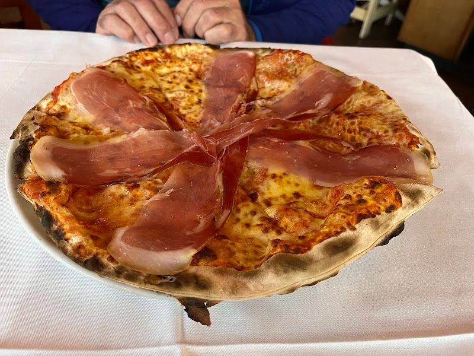

Nestled in the vibrant Green Point area of Cape Town, Mario's Italian Restaurant serves authentic Italian dishes that bring the taste of Italy to your table. We are proud to offer a cozy dining experience that feels like home, where every meal is made with love and care.
Our story began years ago with a passion for sharing the rich, bold flavors of Italy with our local community. Our menu is crafted with the finest ingredients, featuring signature dishes like our salmon pasta and thin prosciutto pizza, all cooked to perfection.
At Mario's, we believe in creating a welcoming atmosphere. Our walls are filled with heartfelt messages from satisfied diners, reflecting our commitment to quality and service. Join us for a meal and experience the warmth of our family-run restaurant.
Discover a range of authentic Italian offerings crafted with the freshest ingredients and a touch of love.

Enjoy a cozy dining atmosphere with our wide variety of Italian dishes, freshly prepared and served with a smile. Perfect for intimate dinners or lively gatherings.
We'd love to hear from you — reach out to us anytime.